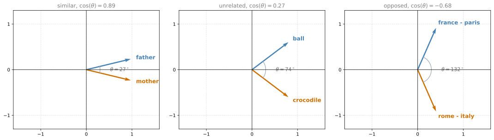
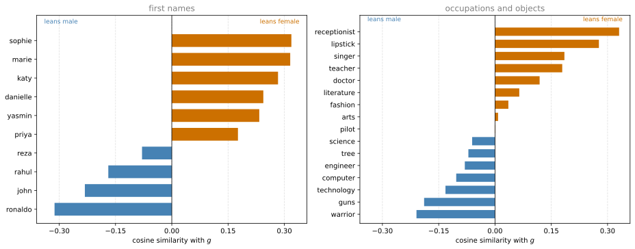
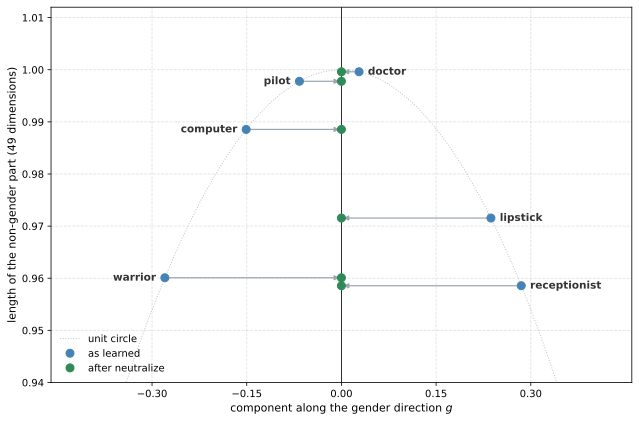

%config InlineBackend.figure_formats = ['svg']
import numpy as np
import matplotlib.pyplot as plt
DATA = "../../../media/deep-learning/operations-on-word-vectors/"Lab: Operations on Word Vectors
deep-learning
sequence-models
nlp
word-embeddings
glove
cosine-similarity
bias
fairness
numpy
lab
Load pretrained GloVe vectors, measure similarity with the cosine, solve word analogies, then neutralize biased words and equalize gender-specific pairs.
Word embeddings are expensive to train, so most practitioners load somebody else’s. That was the argument in Using Word Embeddings, and this lab is what it looks like in practice. A set of pretrained GloVe vectors from Pennington et al. (2014) is loaded from disk, and everything after that is arithmetic on 50-dimensional arrays.
By the end of this lab you will be able to
- explain how word embeddings capture relationships between words,
- load a pretrained set of word vectors,
- measure similarity between two word vectors using cosine similarity,
- solve word analogy problems such as man is to woman as king is to what,
- modify an embedding to reduce its gender bias.
There is no network here and nothing is trained. After three labs of building recurrent architectures, this one is entirely NumPy, and the hardest idea in it is a vector projection.
ImportantDifferences From the Original Assignment
Unusually for a lab on this site, nothing needed porting. The assignment is pure NumPy, it uses no framework API that has since changed, and every number the original notebook published is reproduced here to at least thirteen significant digits. The single exception is the near-zero residue after neutralization, which is floating point noise in both. Three presentational changes were made.
- The grader is stripped. The assignment’s
cosine_similarity_testandcomplete_analogy_testfunctions ran a batch ofassertstatements and printed a green “All tests passed”. The properties they were checking are genuinely interesting, so they are printed and explained here instead of being asserted silently. read_glove_vecsis written out rather than imported. The assignment callsfrom w2v_utils import *, which pulls in TensorFlow and the setup for an unrelated Word2Vec demonstration in order to obtain one six-line file reader. That reader is reproduced below, unchanged, where it can be read. The original module is linked for download.- The
tqdmprogress bar is dropped from the normalization step. Normalizing 400,000 vectors takes a fraction of a second, and a progress bar renders poorly on a static page.
Packages
NumPy does all the arithmetic. Matplotlib is here only for the figures that visualize what the arithmetic did.
NoteLab Files Download
The word vectors are far too large to host with this site, so they live on Google Drive.
- glove.6B.50d.txt (171 MB), the 50-dimensional GloVe vectors this lab runs on, 400,000 words with 50 numbers each. Google warns that it cannot scan a file this size, which is expected, and the download proceeds after confirming.
- w2v_utils.py (5 KB), the assignment’s helper module. This page does not import it, for the reason given above, but it is here for comparison.
A command line download needs the confirmation supplied up front, because a plain request returns the warning page rather than the file.
curl -L -o glove.6B.50d.txt \
"https://drive.usercontent.google.com/download?id=1iGFk5jM8LqnWZLKvtx8j-XBFTMEiU1lL&export=download&confirm=t"The identical file also ships inside Stanford’s official glove.6B.zip release. That archive is 822 MB, because it carries the 100, 200 and 300 dimensional vectors trained on the same 6 billion token corpus alongside the 50-dimensional ones.
The original notebook reads data/glove.6B.50d.txt from a directory next to itself. This page keeps the file with the site’s other lab assets instead, which is what the DATA prefix defined just above points at. Running the code in your own notebook means setting DATA to "" and putting the file in a data/ directory beside it.
Loading the Word Vectors
The file is plain text with one word per line. Each line is the word itself, then 50 numbers separated by spaces, so the parser splits on whitespace, takes the first field as the word, and turns the rest into a NumPy array. This is the assignment’s read_glove_vecs, reproduced unchanged.
Two things come back. words is the set of every word in the vocabulary, useful for asking whether a word is present at all. word_to_vec_map is a dictionary from a word to its 50-dimensional vector, which is what the rest of the lab uses.
def read_glove_vecs(glove_file):
with open(glove_file, 'r') as f:
words = set()
word_to_vec_map = {}
for line in f:
line = line.strip().split() # word, then 50 numbers as strings
curr_word = line[0]
words.add(curr_word)
word_to_vec_map[curr_word] = np.array(line[1:], dtype=np.float64)
return words, word_to_vec_map
words, word_to_vec_map = read_glove_vecs(DATA + "data/glove.6B.50d.txt")
print("vocabulary size:", len(words))
print("vector dimension:", word_to_vec_map["king"].shape[0])
print("word_to_vec_map['king'][:8] =", np.round(word_to_vec_map["king"][:8], 3))vocabulary size: 400000
vector dimension: 50
word_to_vec_map['king'][:8] = [ 0.505 0.686 -0.595 -0.023 0.6 -0.135 -0.088 0.474]Four hundred thousand words, fifty numbers each. Those numbers are not readable individually. No dimension means gender or royalty or plurality, and nothing about the vector for king can be interpreted by inspection. What the vectors carry is relative information, and the way to get at it is to compare two of them.
Embedding Vectors Versus One-Hot Vectors
Recall from Word Representation that one-hot vectors do not capture similarity between words. It is worth watching that fail concretely.
A one-hot vector has a single 1 at the word’s index in the vocabulary and 0 everywhere else. Take any two distinct words. Their one-hot vectors differ in exactly two positions, one where the first has its 1 and one where the second has its 1, so the squared distance between them is \(1^2 + 1^2 = 2\) no matter which two words they are. Every pair of distinct words sits at the same distance \(\sqrt{2}\).
vocab_index = {"cat": 0, "kitten": 1, "hurricane": 2}
def one_hot(word, size=3):
v = np.zeros(size)
v[vocab_index[word]] = 1
return v
print("one-hot distance cat to kitten: ",
round(np.linalg.norm(one_hot("cat") - one_hot("kitten")), 4))
print("one-hot distance cat to hurricane:",
round(np.linalg.norm(one_hot("cat") - one_hot("hurricane")), 4))one-hot distance cat to kitten: 1.4142
one-hot distance cat to hurricane: 1.4142Identical, and the representation has no way to say that a kitten is more like a cat than a hurricane is. GloVe vectors do carry that information, and the next section is the tool for reading it out.
Cosine Similarity
To measure how similar two words are, measure the angle between their embedding vectors. Given two vectors \(u\) and \(v\), the cosine similarity is
\[\text{CosineSimilarity}(u, v) = \frac{u \cdot v}{\|u\|_2 \|v\|_2} = \cos(\theta) \tag{1}\]
where \(u \cdot v\) is the dot product, \(\|u\|_2\) is the norm (or length) of \(u\), and \(\theta\) is the angle between the two vectors. The norm is defined as \(\|u\|_2 = \sqrt{\sum_{i=1}^{n} u_i^2}\).
Dividing by both norms is what makes this a measure of direction alone. The dot product on its own grows when either vector is long, so a common word with a large vector would look similar to everything. After the division, only the angle survives. Two vectors pointing the same way score 1, two at right angles score 0, and two pointing in opposite directions score -1.

Implementing Cosine Similarity
The function is formula (1) written out. Two guards sit around it. The first returns 1 when the two vectors are identical, which sidesteps a rounding error that could otherwise return something like 0.9999999999999998 for a vector compared against itself. The second returns 0 when exactly one of them is the zero vector, because dividing by a zero norm is undefined. Note the order. Two zero vectors are caught by the equality guard first and come back as 1, which is the source notebook’s convention rather than anything the geometry dictates.
def cosine_similarity(u, v):
"""
Cosine similarity reflects the degree of similarity between u and v
Arguments:
u -- a word vector of shape (n,)
v -- a word vector of shape (n,)
Returns:
cosine_similarity -- the cosine similarity between u and v defined by the formula above.
"""
# Special case. Consider the case u = [0, 0], v=[0, 0]
if np.all(u == v):
return 1
dot = np.dot(u, v)
norm_u = np.sqrt(np.sum(u ** 2))
norm_v = np.sqrt(np.sum(v ** 2))
# Avoid division by 0
if np.isclose(norm_u * norm_v, 0, atol=1e-32):
return 0
return dot / (norm_u * norm_v)Before using it on words, it is worth confirming that it behaves the way the geometry says it should. The assignment checked these four properties with assert statements and printed a green “All tests passed”, which hides the numbers. They are more useful visible.
rng = np.random.default_rng(0)
a = rng.uniform(-10, 10, 10)
b = rng.uniform(-10, 10, 10)
c = rng.uniform(-1, 1, 23)
print("a with itself: ", cosine_similarity(a, a))
print("a with its negation: ", cosine_similarity(a, -a))
print("a mask with its complement: ", cosine_similarity((c >= 0) * 1, (c < 0) * 1))
print("a with b: ", cosine_similarity(a, b))
print("2a with 4b: ", cosine_similarity(a * 2, b * 4))a with itself: 1
a with its negation: -1.0000000000000002
a mask with its complement: 0.0
a with b: 0.15760749034580937
2a with 4b: 0.15760749034580937Each line says something about the measure. A vector compared with itself has an angle of zero, so the cosine is 1, and it prints as exactly 1 because the identical-vectors guard returns before any arithmetic happens. Compared with its negation the angle is 180 degrees and the cosine is -1, which takes the long route through the formula and so prints as -1.0000000000000002. That gap of \(2 \times 10^{-16}\) is one rounding step in float64, and it is worth noticing now, because the debiasing section later leans on the same fact. The third line builds two vectors that are 1 exactly where the other is 0, so they share no non-zero coordinate, their dot product is zero, and they are at right angles. The last two lines are the same score, which is the point of dividing by the norms. Scaling either vector stretches it without turning it, and cosine similarity only sees the turn.
Similarity Between Words
Now the real thing. Three comparisons, chosen to show the range.
father = word_to_vec_map["father"]
mother = word_to_vec_map["mother"]
ball = word_to_vec_map["ball"]
crocodile = word_to_vec_map["crocodile"]
france = word_to_vec_map["france"]
italy = word_to_vec_map["italy"]
paris = word_to_vec_map["paris"]
rome = word_to_vec_map["rome"]
print("cosine_similarity(father, mother) = ", cosine_similarity(father, mother))
print("cosine_similarity(ball, crocodile) = ", cosine_similarity(ball, crocodile))
print("cosine_similarity(france - paris, rome - italy) = ",
cosine_similarity(france - paris, rome - italy))cosine_similarity(father, mother) = 0.8909038442893615
cosine_similarity(ball, crocodile) = 0.2743924626137942
cosine_similarity(france - paris, rome - italy) = -0.6751479308174202father and mother score 0.89, which is very close to 1. Nothing in the training procedure was told these are related words. They score highly because they appear in the same kinds of sentences, so the co-occurrence statistics that GloVe factorizes place them in nearly the same direction.
ball and crocodile score 0.27. That is low, but notice it is not near zero. Almost any two English words share some context, so real embeddings live in a fairly narrow cone rather than spreading over the whole sphere. Judge these numbers against each other rather than against an absolute scale.
The third comparison is the interesting one, and it is doing something different from the first two. It compares two differences rather than two words. Reading it carefully, \(\text{france} - \text{paris}\) points from a capital to its country, and \(\text{rome} - \text{italy}\) points from a country to its capital. Those are opposite journeys along the same relationship, so the score is strongly negative. Reverse one of them and it would be strongly positive. That the direction of a relationship is itself a vector is the fact the next section runs on.
Word Analogy Task
In the analogy task the sentence to complete is “\(a\) is to \(b\) as \(c\) is to ____”, for example “man is to woman as king is to queen”. The word to find is a word \(d\) whose embedding satisfies
\[e_b - e_a \approx e_d - e_c\]
where \(e_w\) is the embedding for word \(w\). In words, the step from \(a\) to \(b\) should be the same step as the one from \(c\) to \(d\). Since “the same step” means the same direction, the way to measure it is cosine similarity between the two difference vectors.
There is no clever solution. The implementation computes \(e_b - e_a\) once, then walks the entire vocabulary, and for each candidate word \(w\) measures the cosine similarity between \(e_b - e_a\) and \(e_w - e_c\), keeping the best. The one word excluded from the search is \(c\) itself, since \(e_c - e_c\) is the zero vector and the answer is supposed to be somewhere else.
def complete_analogy(word_a, word_b, word_c, word_to_vec_map):
"""
Performs the word analogy task as explained above: a is to b as c is to ____.
Arguments:
word_a -- a word, string
word_b -- a word, string
word_c -- a word, string
word_to_vec_map -- dictionary that maps words to their corresponding vectors.
Returns:
best_word -- the word such that v_b - v_a is close to v_best_word - v_c,
as measured by cosine similarity
"""
word_a, word_b, word_c = word_a.lower(), word_b.lower(), word_c.lower()
e_a, e_b, e_c = word_to_vec_map[word_a], word_to_vec_map[word_b], word_to_vec_map[word_c]
words = word_to_vec_map.keys()
max_cosine_sim = -100 # any real cosine similarity beats this
best_word = None
for w in words:
# e_c - e_c is the zero vector, so word_c would be a degenerate answer
if w == word_c:
continue
cosine_sim = cosine_similarity(e_b - e_a, word_to_vec_map[w] - e_c)
if cosine_sim > max_cosine_sim:
max_cosine_sim = cosine_sim
best_word = w
return best_wordBefore turning it loose on 400,000 words, it helps to watch it on a vocabulary small enough to draw. The assignment hid this inside a test function, but the little map it builds is a good picture of what the search is doing.
Thirteen fake words sit on a grid. Four cluster around the point \(a = (3, 3)\), and eight surround a second point \(c = (-2, 1)\), named by compass direction. a_nw is one step north-west of a, c_nw is one step north-west of c, and so on. Asking “a is to a_nw as c is to what” should therefore return c_nw, because the north-west step is the same vector in both neighborhoods.
toy_map = {
'a': [3, 3], 'synonym_of_a': [3, 3], 'a_nw': [2, 4], 'a_s': [3, 2],
'c': [-2, 1],
'c_n': [-2, 2], 'c_ne': [-1, 2], 'c_e': [-1, 1], 'c_se': [-1, 0],
'c_s': [-2, 0], 'c_sw': [-3, 0], 'c_w': [-3, 1], 'c_nw': [-3, 2],
}
toy_map = {k: np.array(v) for k, v in toy_map.items()}
print("a -> a_nw :: c -> ", complete_analogy('a', 'a_nw', 'c', toy_map))
print("a -> a_s :: c -> ", complete_analogy('a', 'a_s', 'c', toy_map))
print("a -> synonym_of_a :: c -> ", complete_analogy('a', 'synonym_of_a', 'c', toy_map))
print("a -> c :: a -> ", complete_analogy('a', 'c', 'a', toy_map))a -> a_nw :: c -> c_nw
a -> a_s :: c -> c_s
a -> synonym_of_a :: c -> a
a -> c :: a -> cThe first two are the compass result. The fourth is a consistency check, because “a is to c as a is to what” has to be c.
The third is the one to look at. a to synonym_of_a is a step of zero length, so \(e_b - e_a\) is the zero vector and every candidate scores 0 through the zero-norm guard. Without the skip, c itself would score 1 through the identical-vectors guard and win, which is why the assignment’s hidden test asserted that the answer must not be the input query. With the skip, the winner is whichever word the loop saw first, which is a. A meaningless question gets an arbitrary answer rather than a confidently wrong one.
Now the real vocabulary. Each call compares 400,000 pairs of 50-dimensional vectors in a Python loop, so four analogies take roughly ten seconds.
triads_to_try = [('italy', 'italian', 'spain'),
('india', 'delhi', 'japan'),
('man', 'woman', 'boy'),
('small', 'smaller', 'large')]
for triad in triads_to_try:
print('{} -> {} :: {} -> {}'.format(*triad, complete_analogy(*triad, word_to_vec_map)))italy -> italian :: spain -> spanish
india -> delhi :: japan -> tokyo
man -> woman :: boy -> girl
small -> smaller :: large -> smallerThree out of four. A country to its adjective, a country to its capital, and a male word to its female counterpart all resolve correctly, and none of those relationships was ever labeled anywhere. They fall out of co-occurrence counts on unannotated text.
The fourth is wrong, and worth sitting with. small to smaller is the comparative relationship, so large should give larger. It gives smaller instead. The reason is that the difference vector \(e_{\text{smaller}} - e_{\text{small}}\) is dominated by the comparative-ness rather than by the removal of smallness, and smaller itself sits in almost exactly that direction from large. The method has no notion that a word cannot be its own analog in a different size, because the only thing it can see is an angle. Excluding word_b as well as word_c fixes this particular case, and would break others.
NoteWhat You Should Remember
- Cosine similarity is a good way to compare the similarity between pairs of word vectors. L2 distance works too.
- Dividing by both norms is what removes vector length from the comparison and leaves only direction.
- A relationship between two words is itself a vector, which is why a difference of embeddings can be compared to another difference of embeddings.
- For NLP applications, starting from a pretrained set of word vectors is often the fastest way to get a useful system.
- Analogies work often enough to be striking and fail often enough that they are a demonstration rather than a component to build on.
Review Questions
1. Why does cosine similarity divide by \(\|u\|_2 \|v\|_2\) rather than using the raw dot product?
Answer
Because the raw dot product mixes two things together, the angle between the vectors and their lengths. A frequent word tends to end up with a longer vector, so under the raw dot product it would look similar to everything simply by being long. Dividing by both norms rescales each vector to unit length before comparing, which leaves the angle as the only thing being measured. The printed check above shows the consequence directly, since cosine_similarity(a, b) and cosine_similarity(2a, 4b) return the same number.
1. cosine_similarity(france - paris, rome - italy) returns about -0.68. What would cosine_similarity(france - paris, italy - rome) return, and why?
Answer
About +0.68. Negating one of the two vectors turns it through 180 degrees, and \(\cos(180^\circ - \theta) = -\cos(\theta)\), so the sign flips and the magnitude does not. What the two numbers say together is that france - paris and italy - rome are close to the same vector. That vector is the capital-to-country relationship, and it is shared across pairs, which is the property the analogy task exploits.
1. complete_analogy skips word_c inside the loop. What goes wrong if that line is removed?
Answer
The function becomes able to answer with the word it was handed. When \(w\) is word_c, the candidate difference \(e_w - e_c\) is the zero vector, so the score depends on the other argument. For a real analogy such as “man is to woman as king is to what”, \(e_b - e_a\) is not zero, the zero-norm guard returns 0, and word_c loses to a genuine match scoring around 0.9. The skip changes nothing there.
Where it matters is the degenerate case. When \(e_b - e_a\) is also the zero vector, as in the toy “a is to synonym_of_a” step, both arguments are zero, np.all(u == v) is true, and cosine_similarity returns 1, which is the highest score available. Without the skip, c wins every zero-step question. That is precisely what the assignment’s hidden test asserted against, and it is the case the skip is there for.
Debiasing Word Vectors
Everything so far has been a demonstration that embeddings absorb the structure of the text they were trained on. That structure includes the parts nobody wants. Bias in Word Embeddings laid out the problem and sketched the three-step fix from Bolukbasi et al. (2016). This section runs it on the vectors just loaded.
ImportantDifferent sense of the word bias
Throughout this section, bias means gender, ethnicity, and sexual orientation bias. It does not mean the bias-variance sense used elsewhere in machine learning, and it does not mean the parameter \(b\) in \(z = w^T x + b\).
Finding the Bias Direction
The first step is to find the direction in the 50-dimensional space that corresponds to gender. The simplest estimate is one difference,
\[g = e_{\text{woman}} - e_{\text{man}}\]
which is the same construction used for the analogy task, applied to a pair that differs mainly in gender. Averaging several such differences, \(e_{\text{mother}} - e_{\text{father}}\) and \(e_{\text{girl}} - e_{\text{boy}}\) and so on, gives a better estimate, and the paper uses singular value decomposition rather than an average. One pair is good enough to see the effect.
g = word_to_vec_map['woman'] - word_to_vec_map['man']
print("g.shape =", g.shape)
print(g)g.shape = (50,)
[-0.087144 0.2182 -0.40986 -0.03922 -0.1032 0.94165
-0.06042 0.32988 0.46144 -0.35962 0.31102 -0.86824
0.96006 0.01073 0.24337 0.08193 -1.02722 -0.21122
0.695044 -0.00222 0.29106 0.5053 -0.099454 0.40445
0.30181 0.1355 -0.0606 -0.07131 -0.19245 -0.06115
-0.3204 0.07165 -0.13337 -0.25068714 -0.14293 -0.224957
-0.149 0.048882 0.12191 -0.27362 -0.165476 -0.20426
0.54376 -0.271425 -0.10245 -0.32108 0.2516 -0.33455
-0.04371 0.01258 ]Fifty numbers, none of them individually meaningful. What matters is the direction they define. Project a word onto it and the result says how far that word leans toward woman or toward man.
name_list = ['john', 'marie', 'sophie', 'ronaldo', 'priya', 'rahul',
'danielle', 'reza', 'katy', 'yasmin']
print('List of names and their similarities with constructed vector:')
for w in name_list:
print(w, cosine_similarity(word_to_vec_map[w], g))List of names and their similarities with constructed vector:
john -0.23163356145973724
marie 0.315597935396073
sophie 0.31868789859418784
ronaldo -0.31244796850329437
priya 0.17632041839009402
rahul -0.16915471039231722
danielle 0.24393299216283895
reza -0.07930429672199553
katy 0.2831068659572615
yasmin 0.23313857767928753Names conventionally given to girls come out positive and names conventionally given to boys come out negative. That is the expected result and there is nothing wrong with it. First names really do carry gender information, and an embedding that failed to represent it would be a worse model of English.
Now the same measurement on words that have no business carrying gender at all.
word_list = ['lipstick', 'guns', 'science', 'arts', 'literature', 'warrior',
'doctor', 'tree', 'receptionist', 'technology', 'fashion',
'teacher', 'engineer', 'pilot', 'computer', 'singer']
print('Other words and their similarities:')
for w in word_list:
print(w, cosine_similarity(word_to_vec_map[w], g))Other words and their similarities:
lipstick 0.2769191625638267
guns -0.1888485567898898
science -0.06082906540929701
arts 0.008189312385880339
literature 0.06472504433459926
warrior -0.20920164641125288
doctor 0.11895289410935041
tree -0.07089399175478091
receptionist 0.3307794175059374
technology -0.13193732447554293
fashion 0.035638946257727
teacher 0.17920923431825664
engineer -0.0803928049452407
pilot 0.001076449899191738
computer -0.103303588738505
singer 0.1850051813649629
receptionist at 0.33 leans female about as strongly as sophie does, and lipstick at 0.28 is not far behind. On the other side warrior at -0.21 and guns at -0.19 lean male about as strongly as rahul does. singer and teacher sit around 0.18, technology and computer around -0.11. None of that is a fact about receptionists or computers. It is a fact about the 6 billion tokens of text these vectors were fit to, faithfully reproduced.
Most of the list is much weaker than that, and the size is worth keeping in view alongside the sign. literature at 0.065, engineer at -0.080, tree at -0.071, arts at 0.008 and pilot at 0.001 all sit close to zero, so their leanings are faint and deserve to be read as faint. The notebook builds its point on two of them, contrasting computer on the male side with literature on the female side, and that contrast is real in its sign. What the chart adds is a sense of scale. A handful of these words carry a large gender component and most carry very little, which is also the evidence that the effect is not a uniform artifact of the method.
The fix has to treat two kinds of word differently. receptionist and technology should have their gender component removed, and that operation is neutralization. grandmother and grandfather should keep theirs, because gender is part of what those words mean, but the pair should be made symmetric about the bias axis so neither sits closer to a neutral word than the other. That second operation is equalization.
Neutralizing Bias for Non-Gender-Specific Words
Split the 50-dimensional space into two parts. One is the bias direction \(g\), which is 1-dimensional. The other is everything perpendicular to it, written \(g_{\perp}\), which is 49-dimensional. Any word vector \(e\) can be written as a piece along \(g\) plus a piece in \(g_{\perp}\), and neutralizing means throwing the first piece away.
\[e^{\text{bias\_component}} = \frac{e \cdot g}{\|g\|_2^2} \, g \tag{2}\]
\[e^{\text{debiased}} = e - e^{\text{bias\_component}} \tag{3}\]
Formula (2) is the projection of \(e\) onto the direction of \(g\). Reading it left to right, \(e \cdot g\) measures how much of \(e\) lies along \(g\), dividing by \(\|g\|_2^2\) turns that measurement into a coefficient that does not depend on how long \(g\) happens to be, and multiplying by \(g\) turns the coefficient back into a vector pointing along \(g\). Subtracting it in formula (3) leaves a vector with no component in the gender direction at all.
The paper assumes every word vector has L2 norm 1, so the vectors are normalized first. Dividing each vector by its own length changes no angle and therefore no cosine similarity, but it does put every word on the unit sphere, which is what makes the equalization arithmetic in the next section work out.
word_to_vec_map_unit_vectors = {
word: embedding / np.linalg.norm(embedding)
for word, embedding in word_to_vec_map.items()
}
g_unit = word_to_vec_map_unit_vectors['woman'] - word_to_vec_map_unit_vectors['man']
print("norm of the raw vector for 'woman': ",
round(np.linalg.norm(word_to_vec_map['woman']), 4))
print("norm of the unit vector for 'woman':",
round(np.linalg.norm(word_to_vec_map_unit_vectors['woman']), 4))norm of the raw vector for 'woman': 5.5751
norm of the unit vector for 'woman': 1.0def neutralize(word, g, word_to_vec_map):
"""
Removes the bias of "word" by projecting it on the space orthogonal to the bias axis.
This function ensures that gender neutral words are zero in the gender subspace.
Arguments:
word -- string indicating the word to debias
g -- numpy-array of shape (50,), corresponding to the bias axis (such as gender)
word_to_vec_map -- dictionary mapping words to their corresponding vectors.
Returns:
e_debiased -- neutralized word vector representation of the input "word"
"""
e = word_to_vec_map[word]
e_biascomponent = (np.dot(e, g) / np.sum(g ** 2)) * g
e_debiased = e - e_biascomponent
return e_debiasedword = "receptionist"
print("cosine similarity between " + word + " and g, before neutralizing: ",
cosine_similarity(word_to_vec_map[word], g))
e_debiased = neutralize(word, g_unit, word_to_vec_map_unit_vectors)
print("cosine similarity between " + word + " and g_unit, after neutralizing: ",
cosine_similarity(e_debiased, g_unit))cosine similarity between receptionist and g, before neutralizing: 0.3307794175059374
cosine similarity between receptionist and g_unit, after neutralizing: 2.274357847240278e-17The second number is zero. It prints as something on the order of \(10^{-17}\) rather than as 0.0 because subtracting the projection involves 50 floating point multiplications and additions, each carrying a rounding error of about \(10^{-16}\) relative to 1. What survives is that residue. Geometrically the two vectors are exactly perpendicular.
Only the gender component moved. The following figure plots each word by its coordinate along the unit gender axis, horizontally, and by the length of what remains after that coordinate is removed, vertically. Neutralization slides a word left or right onto the vertical axis without changing its height, which is the visual statement that the other 49 dimensions were untouched.
One side effect is visible there. Since the vectors were normalized, every word starts on the unit circle, so removing a horizontal component leaves a vector shorter than 1. A neutralized receptionist has length 0.959 rather than 1. That shortening is the reason the equalization formulas in the next section carry a square root factor, which is there to put the length back.

Equalization Algorithm for Gender-Specific Words
Neutralization is the wrong tool for grandmother and grandfather, since stripping gender out of those words would destroy their meaning. What should be true of them is something weaker. They should differ from each other only by gender, and they should sit at equal distances from every word that has been neutralized.
That is not automatic. Suppose grandmother sits closer to a neutralized receptionist than grandfather does. Then the embedding still carries the suggestion that receptionists are grandmothers rather than grandfathers, even though receptionist itself has no gender component left. Equalization fixes the pair rather than the neutral word.
Given a pair \((w_1, w_2)\) and a bias axis, the algorithm is seven steps of linear algebra.
\[\mu = \frac{e_{w1} + e_{w2}}{2} \tag{4}\]
\[\mu_{B} = \frac{\mu \cdot \text{bias\_axis}}{\|\text{bias\_axis}\|_2^2} \, \text{bias\_axis} \tag{5}\]
\[\mu_{\perp} = \mu - \mu_{B} \tag{6}\]
\[e_{w1B} = \frac{e_{w1} \cdot \text{bias\_axis}}{\|\text{bias\_axis}\|_2^2} \, \text{bias\_axis} \tag{7}\]
\[e_{w2B} = \frac{e_{w2} \cdot \text{bias\_axis}}{\|\text{bias\_axis}\|_2^2} \, \text{bias\_axis} \tag{8}\]
\[e_{w1B}^{\text{corrected}} = \sqrt{1 - \|\mu_{\perp}\|^2_2} \cdot \frac{e_{w1B} - \mu_B}{\|e_{w1B} - \mu_B\|_2} \tag{9}\]
\[e_{w2B}^{\text{corrected}} = \sqrt{1 - \|\mu_{\perp}\|^2_2} \cdot \frac{e_{w2B} - \mu_B}{\|e_{w2B} - \mu_B\|_2} \tag{10}\]
\[e_1 = e_{w1B}^{\text{corrected}} + \mu_{\perp} \tag{11}\]
\[e_2 = e_{w2B}^{\text{corrected}} + \mu_{\perp} \tag{12}\]
Underneath the notation the plan is short. Formulas (4) to (6) find the midpoint of the pair and split it into a gender part and a non-gender part. Formulas (11) and (12) then rebuild both words on top of the same non-gender part \(\mu_{\perp}\), which is what makes gender the only difference left between them. Formulas (7) to (10) take each word’s own gender component, keep its sign, and rescale both to the same magnitude, which is what puts the two words at equal distances from the neutral subspace. The square root factor is what sets that shared magnitude, and as the formulas are written it is chosen so that the rebuilt vectors come back out at length exactly 1, which is why the whole section works on the normalized copy of the map.
def equalize(pair, bias_axis, word_to_vec_map):
"""
Debias gender specific words by following the equalize method described above.
Arguments:
pair -- pair of strings of gender specific words to debias, e.g. ("actress", "actor")
bias_axis -- numpy-array of shape (50,), vector corresponding to the bias axis, e.g. gender
word_to_vec_map -- dictionary mapping words to their corresponding vectors
Returns
e_1 -- word vector corresponding to the first word
e_2 -- word vector corresponding to the second word
"""
# Step 1: select the two word vectors
w1, w2 = pair
e_w1, e_w2 = word_to_vec_map[w1], word_to_vec_map[w2]
# Step 2: the midpoint of the pair
mu = (e_w1 + e_w2) / 2.0
# Step 3: split the midpoint into its bias part and its orthogonal part
mu_B = (np.dot(mu, bias_axis) / np.sum(bias_axis ** 2)) * bias_axis
mu_orth = mu - mu_B
# Step 4: the bias part of each word on its own
e_w1B = (np.dot(e_w1, bias_axis) / np.sum(bias_axis ** 2)) * bias_axis
e_w2B = (np.dot(e_w2, bias_axis) / np.sum(bias_axis ** 2)) * bias_axis
# Step 5: rescale both bias parts to the same magnitude, keeping their signs
corrected_e_w1B = np.sqrt(np.abs(1 - np.sum(mu_orth ** 2))) * (e_w1B - mu_B) / np.linalg.norm(e_w1 - mu_orth - mu_B)
corrected_e_w2B = np.sqrt(np.abs(1 - np.sum(mu_orth ** 2))) * (e_w2B - mu_B) / np.linalg.norm(e_w2 - mu_orth - mu_B)
# Step 6: rebuild both words on the shared orthogonal part
e1 = corrected_e_w1B + mu_orth
e2 = corrected_e_w2B + mu_orth
return e1, e2
ImportantPrinted Equations and Shipped Code Disagree
Step 5 above is not formulas (9) and (10). The formulas divide by \(\|e_{w1B} - \mu_B\|_2\), the length of the word’s own gender component measured from the midpoint’s. The code divides by \(\|e_{w1} - \mu_{\perp} - \mu_B\|_2\), which is the distance from the whole word vector to the whole midpoint. The two agree only when a word’s non-gender part already equals \(\mu_{\perp}\), which is to say only when the pair already shares one. That is exactly the situation for the man and woman pair the assignment demonstrates, so the discrepancy is invisible there. It shows up on any pair whose non-gender parts differ, which is the ordinary case and includes grandfather and grandmother.
For grandfather and grandmother the formulas call for a denominator of 0.1762 and the code uses 0.3078. Measured against g_unit, the formulas would return vectors of length exactly 1 with a cosine similarity of \(\mp 0.3304\), and the code returns length 0.9626 and \(\mp 0.1965\). Both versions produce the symmetry the algorithm exists to produce, and both put the pair at equal distances from a neutralized word, so the conclusions in this section hold either way. The numbers differ.
The code is reproduced here exactly as the assignment ships it, because that is what produced the published outputs. It is worth knowing about the mismatch before reusing either version.
The assignment demonstrates this on man and woman.
print("cosine similarities before equalizing:")
print("cosine_similarity(word_to_vec_map[\"man\"], gender) = ",
cosine_similarity(word_to_vec_map["man"], g))
print("cosine_similarity(word_to_vec_map[\"woman\"], gender) = ",
cosine_similarity(word_to_vec_map["woman"], g))
print()
e1, e2 = equalize(("man", "woman"), g_unit, word_to_vec_map_unit_vectors)
print("cosine similarities after equalizing:")
print("cosine_similarity(e1, gender) = ", cosine_similarity(e1, g_unit))
print("cosine_similarity(e2, gender) = ", cosine_similarity(e2, g_unit))cosine similarities before equalizing:
cosine_similarity(word_to_vec_map["man"], gender) = -0.1171109576533683
cosine_similarity(word_to_vec_map["woman"], gender) = 0.3566661884627037
cosine similarities after equalizing:
cosine_similarity(e1, gender) = -0.23871136142883698
cosine_similarity(e2, gender) = 0.23871136142883703The two numbers after equalizing are symmetric, -0.2387 and +0.2387, and the two before are not. It looks like a clean demonstration, and it is not quite one, for two reasons worth being explicit about.
The “before” lines measure the raw vectors against the raw g, while the “after” lines measure normalized vectors against g_unit. Those are different measurements, so the four numbers are not directly comparable. Measure the same pair the same way on both sides and something else appears.
print("man, in the unit map, before equalizing: ",
cosine_similarity(word_to_vec_map_unit_vectors["man"], g_unit))
print("woman, in the unit map, before equalizing:",
cosine_similarity(word_to_vec_map_unit_vectors["woman"], g_unit))man, in the unit map, before equalizing: -0.23871136142883737
woman, in the unit map, before equalizing: 0.23871136142883745Already symmetric, and already the values that came out afterwards, to within floating point roundoff. Equalizing man and woman against g_unit does nothing at all, because g_unit was defined as \(e_{\text{woman}} - e_{\text{man}}\) on those very vectors.
The reason is one line of algebra. The midpoint is \(\mu = (e_{\text{man}} + e_{\text{woman}})/2\), so \(\mu \cdot g = (\|e_{\text{woman}}\|^2 - \|e_{\text{man}}\|^2)/2\), and both vectors were normalized to length 1, so that is zero. The midpoint therefore has no gender component at all, \(\mu_B\) is the zero vector, and \(\mu_{\perp}\) is the whole midpoint. Each word’s own gender component then works out to exactly \(\pm g/2\), already equal and opposite, and the rescaling factor works out to exactly 1. The function returns what it was given. The assignment’s example is the one pair in the vocabulary guaranteed to show no effect.
A pair that does not already share a non-gender part does show an effect. grandfather and grandmother are the pair used as the example on the theory page.
pair = ("grandfather", "grandmother")
print("before equalizing:")
for w in pair:
print(f" {w:12s}", cosine_similarity(word_to_vec_map_unit_vectors[w], g_unit))
e1, e2 = equalize(pair, g_unit, word_to_vec_map_unit_vectors)
print("after equalizing:")
for w, e in zip(pair, (e1, e2)):
print(f" {w:12s}", cosine_similarity(e, g_unit))before equalizing:
grandfather -0.055935315880308666
grandmother 0.29637118120697725
after equalizing:
grandfather -0.19646291017307452
grandmother 0.19646291017307468Before, grandmother leans female five times as strongly as grandfather leans male. After, the two lean by equal and opposite amounts. Neither has been made gender-neutral, which is the point. They have been made gender-symmetric.
The claim that motivated all this was about distances to neutralized words, so it is worth measuring that directly rather than trusting the geometry.
receptionist_debiased = neutralize("receptionist", g_unit, word_to_vec_map_unit_vectors)
def dist(u, v):
return np.linalg.norm(u - v)
print("distance to the neutralized 'receptionist'")
print(" before: grandfather %.4f grandmother %.4f"
% (dist(word_to_vec_map_unit_vectors["grandfather"], receptionist_debiased),
dist(word_to_vec_map_unit_vectors["grandmother"], receptionist_debiased)))
print(" after: grandfather %.4f grandmother %.4f"
% (dist(e1, receptionist_debiased), dist(e2, receptionist_debiased)))distance to the neutralized 'receptionist'
before: grandfather 1.1824 grandmother 1.0328
after: grandfather 1.0766 grandmother 1.0766Before equalization the neutralized receptionist is measurably closer to grandmother than to grandfather, even though receptionist itself has had its gender component removed. That residue is exactly the stereotype the paper is chasing. After equalization the two distances agree to four decimal places.
![A scatter plot with a horizontal axis for the gender component and a vertical axis for the length of the remaining 49 dimensions. Open circles mark grandfather slightly left of center and grandmother well to the right, both on a faint unit circle at different heights. Filled circles mark both after equalization, symmetric about the vertical axis and at the same height, just inside the circle, with dashed arrows connecting each word to its new position. A green marker shows the neutralized receptionist on the vertical axis.](lab-operations-on-word-vectors_files/figure-html/cell-25-output-1.svg)
Limits of This Procedure
These algorithms reduce bias. They do not remove it.
The bias direction here was estimated from a single pair of words, woman and man. Averaging over \(e_{\text{woman}} - e_{\text{man}}\), \(e_{\text{mother}} - e_{\text{father}}\), \(e_{\text{girl}} - e_{\text{boy}}\) and more would give a better estimate of the gender direction, and the paper uses singular value decomposition over many such pairs instead.
Deciding which words to neutralize is its own problem. The paper trains a classifier to separate definitional words from the rest, and the list of pairs to equalize is largely hand-picked.
Most importantly, projecting out one direction only removes the bias that happened to lie along that direction. Gender information distributed across a subspace, or encoded in which words neighbor which, survives the projection untouched. The measurement afterwards is also easy to fool, since a receptionist with a cosine similarity of \(10^{-17}\) to \(g\) can still have she and secretary among its nearest neighbors. This is an active research area rather than a solved problem, and a debiased embedding is better described as one specific measurable bias having been removed.
NoteWhat You Should Remember
- A bias direction is estimated as a difference of embeddings, in the same way an analogy relationship is.
- Neutralizing a word means subtracting its projection onto that direction, which leaves the other 49 dimensions untouched.
- Equalizing a pair means rebuilding both words on a shared non-bias part with equal and opposite bias parts, so the two end up as mirror images across the non-bias subspace rather than about the bias axis itself.
- Definitional words such as
grandmotherare equalized, not neutralized, since gender is part of what they mean. - Both operations are applied to unit-normalized vectors, because the paper’s arithmetic assumes an L2 norm of 1.
- Removing one measurable direction is not the same as removing bias.
Review Questions
1. Why is receptionist neutralized while grandmother is equalized instead?
Answer
Because gender is part of the definition of grandmother and is not part of the definition of receptionist. A grandmother is female by definition, so an embedding that placed grandmother at zero on the gender axis would be a worse model of English. A receptionist has no gender by definition, so the component it carries is a statistical residue of who the training text described as receptionists, and removing it costs nothing true. Neutralization removes the component. Equalization keeps it and only makes it symmetric with the partner word, so that neither member of the pair sits closer to the neutralized words than the other.
1. After neutralizing, cosine_similarity(e_debiased, g_unit) prints roughly \(2 \times 10^{-17}\) rather than exactly zero. Is this a bug?
Answer
No. The vectors are exactly perpendicular in exact arithmetic, and the residue is floating point rounding. A float64 carries about 16 significant decimal digits, so each of the 50 multiplications and additions in the dot product introduces a relative error near \(10^{-16}\). A result of \(10^{-17}\) against operands of order 1 is what a true zero looks like after that arithmetic. The original notebook prints \(3.57 \times 10^{-17}\) and this page prints \(2.27 \times 10^{-17}\). Both are zero. The residue differs because the dot product is accumulated in a different order by the NumPy build each one ran on.
1. Equalizing the pair ("man", "woman") against g_unit leaves both vectors unchanged. Why?
Answer
Because g_unit was built from that pair, as \(e_{\text{woman}} - e_{\text{man}}\) on the unit-normalized vectors. Both vectors have length 1, so the midpoint satisfies \(\mu \cdot g = (\|e_{\text{woman}}\|^2 - \|e_{\text{man}}\|^2)/2 = 0\). The midpoint lies entirely in the non-gender subspace, which means the pair already shares the \(\mu_{\perp}\) that equalization would give it, and each word’s gender component is already \(\pm g/2\), equal and opposite. Equalization has nothing left to do, and the printed cosine similarities agree before and after to fourteen decimal places, which is floating point equality rather than a coincidence. The assignment obscures this by measuring the “before” case on the raw vectors and the “after” case on the normalized ones, which makes an unchanged pair look like it moved. A pair that does not already share a non-gender part, such as grandfather and grandmother, does move.
1. receptionist has been neutralized, so its similarity with \(g\) is zero. Does that mean the embedding no longer associates it with women?
Answer
No. It means the embedding no longer associates it with women along the one direction that was measured and removed. Gender information in a 50-dimensional space is not confined to a single axis, and it also lives in the relative positions of words rather than in any coordinate. A vector orthogonal to \(g\) can still have secretary, nurse and she as its nearest neighbors, and every downstream model reads those neighborhoods rather than reading the cosine with \(g\). That is why the paper’s own evaluation goes well beyond checking the projection, and why the honest description of this procedure is that one measurable form of bias was removed, not that the embedding was made fair.
References
- Bolukbasi, T., Chang, K.-W., Zou, J., Saligrama, V., & Kalai, A. (2016). Man is to computer programmer as woman is to homemaker? Debiasing word embeddings. arXiv. https://doi.org/10.48550/arXiv.1607.06520
- Pennington, J., Socher, R., & Manning, C. (2014). GloVe: Global vectors for word representation. In Proceedings of the 2014 Conference on Empirical Methods in Natural Language Processing (EMNLP) (pp. 1532-1543). Association for Computational Linguistics. https://doi.org/10.3115/v1/D14-1162